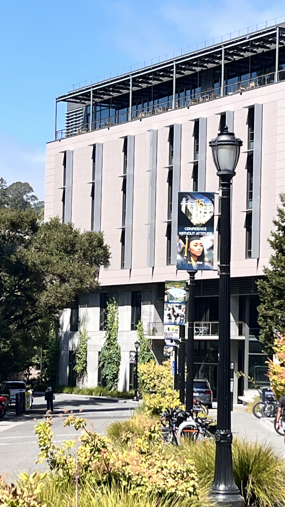
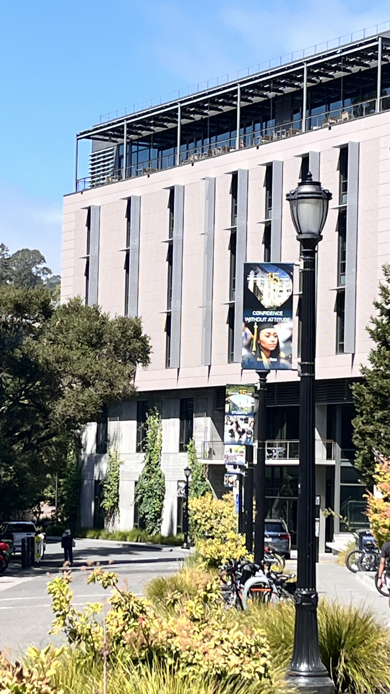

Pictures of my friend while studying. Very close up (Left) then 3 feet away with zoom (Right).
When you take a close-up selfie, the camera exaggerates features that are nearer to the lens and for features farther away, they look smaller. So this causes the face to look disproportionate. But in the second picture, when we step back, the camera captures the face in the right proportions since from that distance, all of the facial features are about the same distance away from the camera. So even if we zoom in, we are keeping the proportionality and uniformness, thus creating a more natural-looking photo.
 
